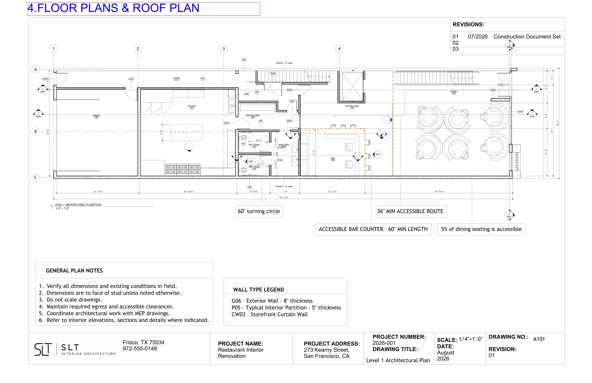
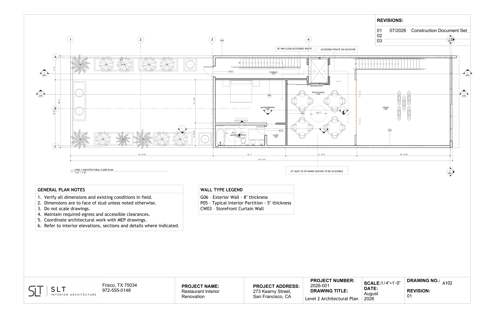
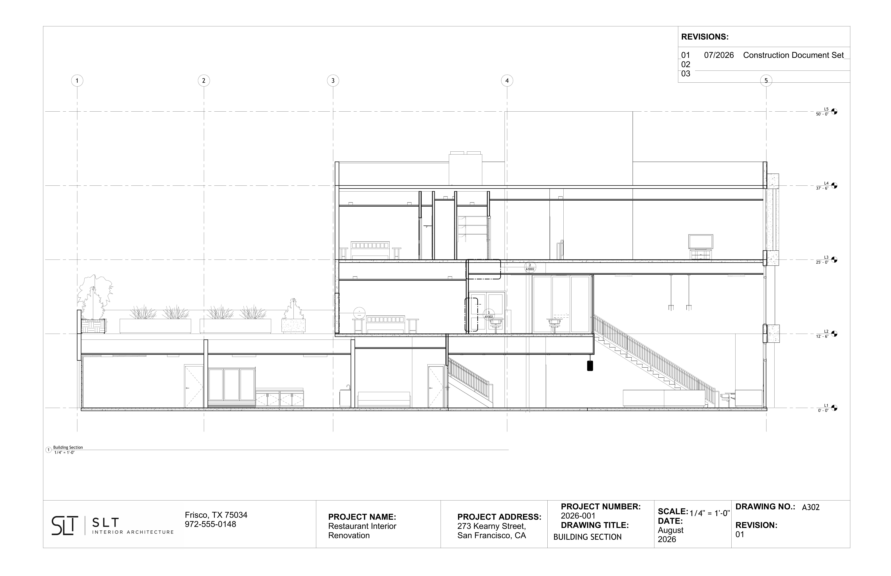
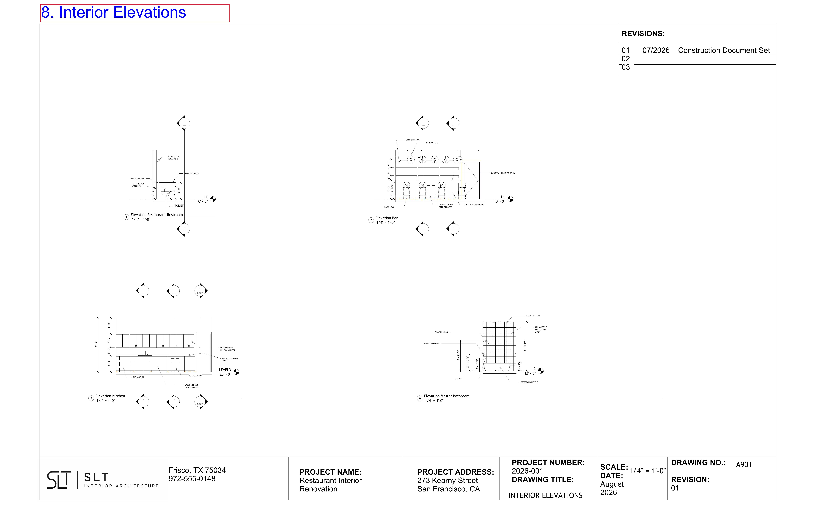
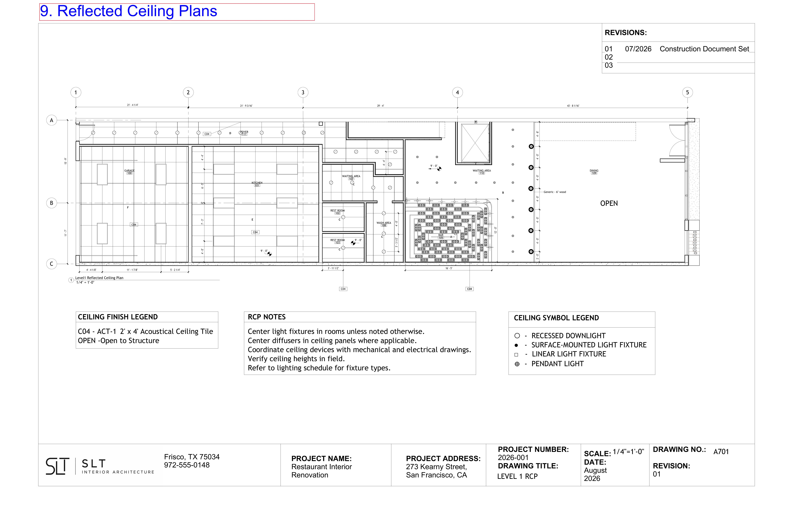

Exterior Elevations
Front and back elevations at 1/4" = 1'-0" showing the three-story facade — storefront glazing, wooden vertical louvers, white stucco, and wood cladding. Material callouts and floor level heights annotated throughout.

Restaurant Interior Renovation — 273 Kearny Street, San Francisco
Course: ARCHX414.6-017 Construction Documents | UC Berkeley
Role: Student Designer
Project: Restaurant Interior Renovation
Location: 273 Kearny Street, San Francisco, CA
Area: ~4,500 SF across two main floors and a mezzanine
Date: August 2026
A complete 20-sheet construction document set for the interior renovation of an existing restaurant building. The scope includes interior planning, finishes, lighting, building-systems coordination, and a new storefront — documented through demolition plans, architectural floor plans, exterior and interior elevations, building sections, reflected ceiling plans, enlarged restroom plans, finish schedules, and construction details.
Level 1 and Level 2 architectural plans at 1/4" = 1'-0" showing the restaurant layout — hostess/waiting area, bar, dining room, kitchen, private dining, restrooms, and the residential apartment above. Plans include wall type legend, accessibility clearances, and general plan notes.


Front and back elevations at 1/4" = 1'-0" showing the three-story facade — storefront glazing, wooden vertical louvers, white stucco, and wood cladding. Material callouts and floor level heights annotated throughout.
A longitudinal building section at 1/4" = 1'-0" cutting through all three levels, showing the spatial relationship between the restaurant, mezzanine dining, and upper-level residential spaces. Floor-to-floor heights, stair runs, and ceiling conditions are documented.

Detailed stair section at 1/2" = 1'-0" with riser/tread dimensions, steel guardrail and baluster specifications, and handrail heights. The front exterior wall section shows the storefront glazing system, door and window dimensions, and level datums from L1 through L4.

Interior elevations at 1/4" = 1'-0" for key spaces — restaurant restroom, bar counter with open shelving and pendant lights, kitchen with upper and base cabinets, and the master bathroom with freestanding tub and shower.

Level 1 reflected ceiling plan at 1/4" = 1'-0" showing recessed downlights, surface-mounted fixtures, linear light fixtures, and pendant lights. Ceiling finish legend, ceiling symbol legend, and RCP notes coordinate lighting layout with mechanical systems.

Large-scale construction details at 1-1/2" = 1'-0" and 3" = 1'-0" — bar counter section with quartz countertop and wood veneer casework, restaurant ceiling detail with acoustical tile, typical partition detail (P05), and floor transition detail between wood and porcelain tile finishes.

G0.0 Cover Sheet
G0.1 Exit Diagrams
D101 Level 1 Demolition Plan
D102 Level 2 Demolition Plan
D103 Level 3 Demolition Plan
A101 Level 1 Architectural Plan
A102 Level 2 Architectural Plan
A103 Level 3 Architectural Plan
A603 Roof Plan
A802 Exterior Elevations
A302 Building Section
A801 Stair Section & Front Exterior Wall
A602 Enlarged Restaurant Restroom Plan
A601 Restaurant Restroom Finish Plan
A1001 Finish Schedule
A901 Interior Elevations
A701 Level 1 Reflected Ceiling Plan
A702 Level 2 Reflected Ceiling Plan
A703 Level 3 Reflected Ceiling Plan
A1002 Construction Details